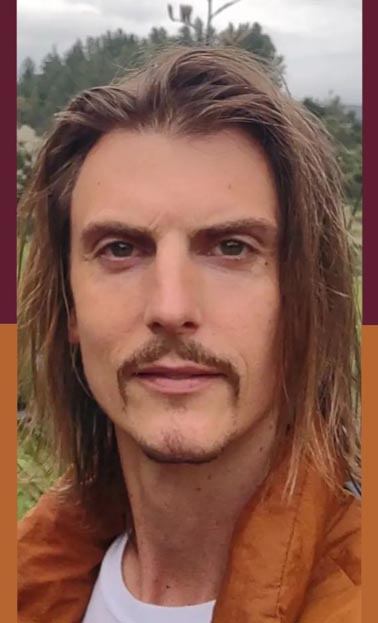

Warwick Marshall
Identifies the hidden logic that causes high-stakes systems—technical, behavioral, organizational—to stall or fail.
Warwick Marshall is a systems architect specializing in structural diagnostics. He identifies the hidden logic that causes high-stakes systems—technical, behavioral, and organizational—to stall or fail, enabling targeted correction rather than surface-level fixes.
Whether debugging a full-stack IT environment or a subconscious belief architecture, Marshall applies the same engineering discipline: dependency mapping, fault isolation, and root-cause correction.
Method
Complex failure is rarely a surface-level event; it is a downstream effect of a governing rule. Marshall’s practice centers on the Belief Inference Process, a structured method for identifying and dismantling the operating rules that dictate what is visible, permissible, and possible within a system.
isolate the failure → map dependencies → locate the causal rule → implement the minimal stable fix
Core Insight
Beliefs function as operating rules rather than opinions. These rules determine what becomes visible, permissible, and possible. Locating and articulating them restores autonomy.
The Belief Inference Process provides a structured method for identifying, documenting, and dismantling subconscious belief architectures through direct logical tracing.
Core Practice & Applications
Infrastructure: Managing high-stakes technical environments (servers, networks, databases) for organizations where downtime is not an option.
Cognition: Author of Belief Mastery and Sovereign of Mind—treating cognitive patterns as executable code that shapes perception and behavior.
Relational diagnostics: Work on redpillSMV and related frameworks applies structural signal analysis to dating and partnership dynamics (separate from the core sovereignty tools on this site).
Intervention: Facilitates peer-counseling, mediation, and private sessions for individuals and teams in complex, high-pressure environments.
Across all domains—from infrastructure to human temperament—the goal remains constant: restore and enhance operator control through structural clarity.
This work serves individuals, teams, and organizations where failure is costly and structural clarity is the fix.
beliefmastery.github.io | Instagram @belief.mastery | Facebook